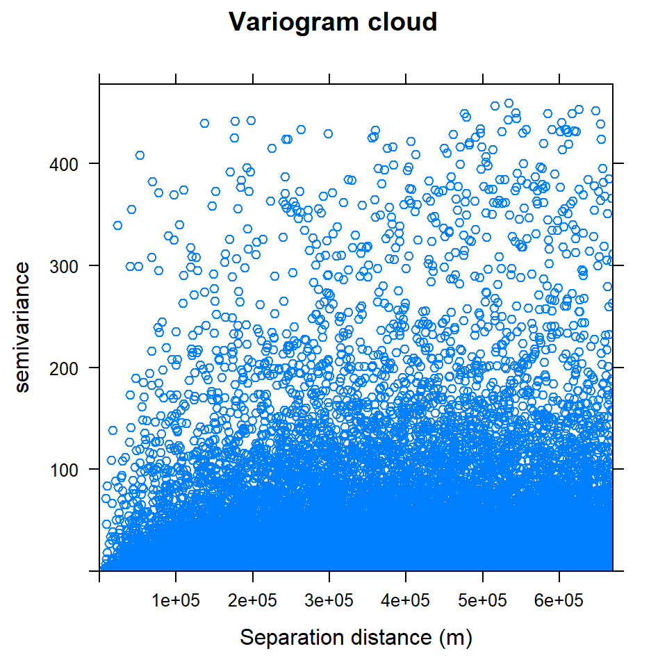
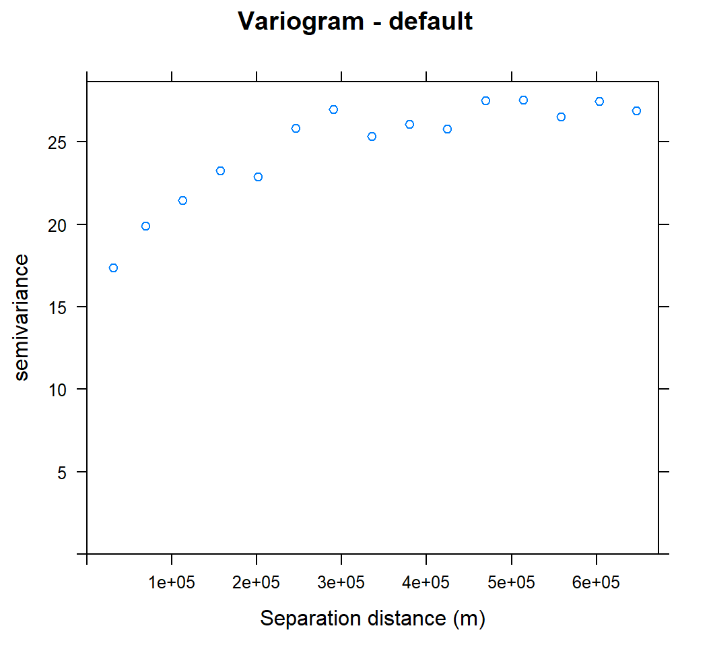
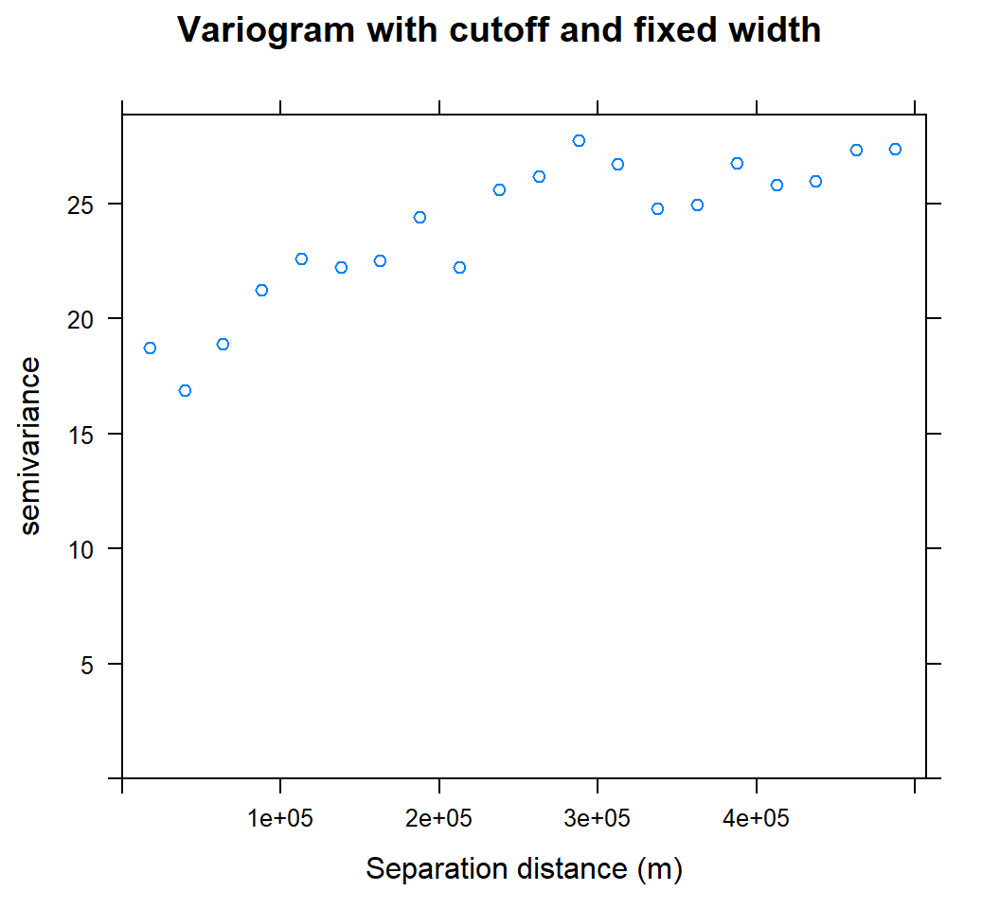
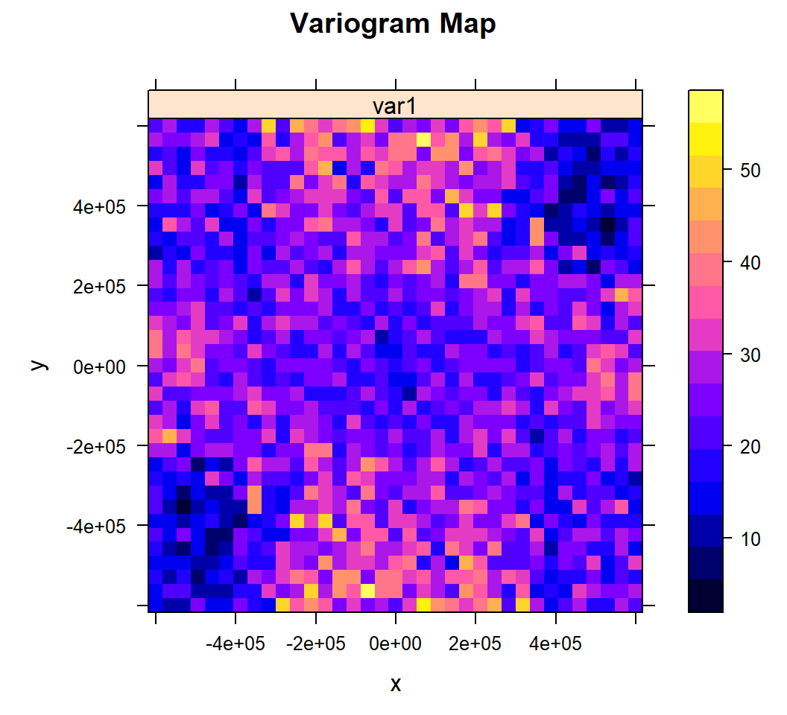
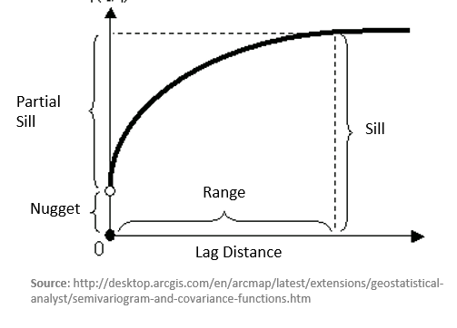
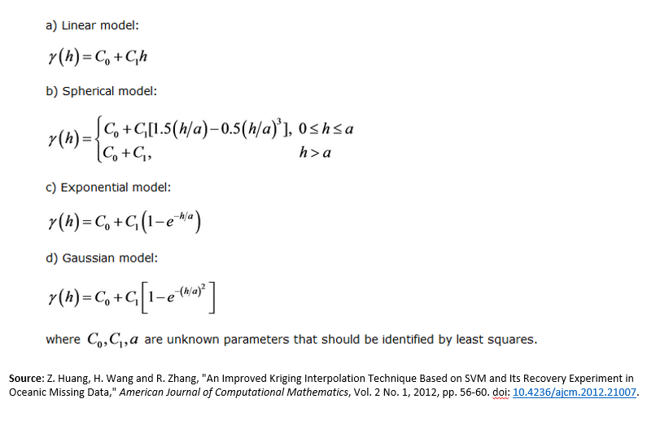
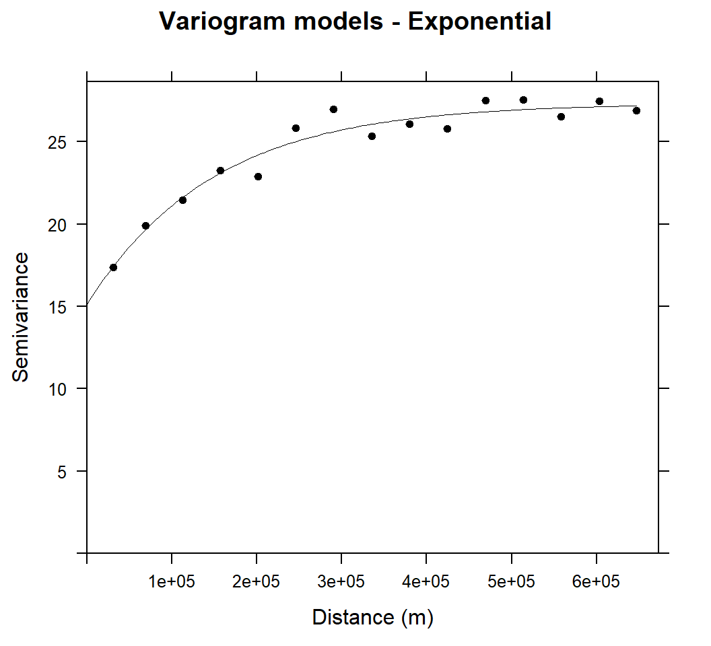
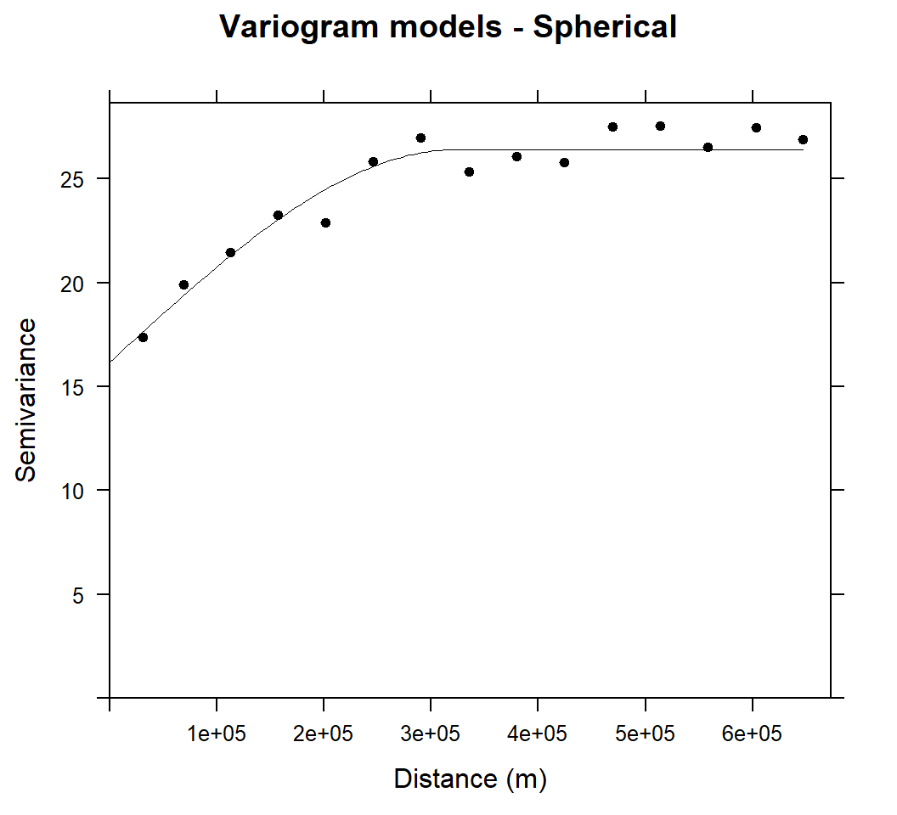
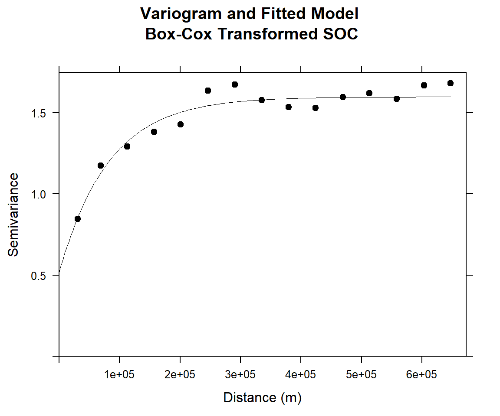

Semivariogram Modeling
Semivariogram is a function describing the degree of spatial correlation of a spatial random variable. In spatial modeling, semivariogram begins with a graph of the empirical semivariogram, which is the half of average squared difference between points separated by a distance. The semivariogram is calculated as:

Where, Nh is the number of pairs separated by vector h, vector h is lag distance, xi is the starting location and xi+h is the ending location. If y is only dependent on the length of lag distance but not its direction.
The semivariogram is directly related to covariance function, which measure the strength of statistical correlation or similarity as a function of distance. Unlike covariance function function, the experimental semivariogram measures the average dissimilarity between data separated by distance by vector h (lag distance). The distances between pairs at which the average semivariogram is calculated are called lags.
In this exercises we will cover:
Load package:
library(gstat)
library(moments)##
## Attaching package: 'moments'## The following objects are masked from 'package:e1071':
##
## kurtosis, moment, skewness## The following object is masked from 'package:spdep':
##
## gearylibrary(raster)Load Data
The soil organic carbon data (train and test data set) that we have created in previous lesson is available for download here.
# Define data folder
dataFolder<-"F:\\Spatial_Data_Processing_and_Analysis_R\\Data\\DATA_08\\"train<-read.csv(paste0(dataFolder,"train_data.csv"), header= TRUE) Experimental Variogram
We use variovariogram() function of gstat package to calculate experimental variogram of SOC. Before that we have to define x & y variables to coordinates
coordinates(train) = ~x+yVariogram Cloud
We will use all default values to calculate the semivariance cloud which show the semivariogram values for all pairs of locations within a dataset and plots them as a function of the distance that separates the two locations.
v.cloud<-variogram(SOC~ 1, data = train, cloud=T)
head(v.cloud)## dist gamma dir.hor dir.ver id left right
## 1 511201.3 16.1425620 0 0 var1 2 1
## 2 430399.9 35.7266045 0 0 var1 3 1
## 3 186259.2 3.8392205 0 0 var1 3 2
## 4 256816.3 17.7786845 0 0 var1 4 1
## 5 287418.1 0.0394805 0 0 var1 4 2
## 6 294316.2 3.1000500 0 0 var1 4 3plot(v.cloud, main = "Variogram cloud", xlab = "Separation distance (m)")
The variogram cloud shows all point-pairs, but it is difficult to examine the general pattern of spatial dependence. For examine the spatial dependence, we will calculate the empirical variogram, which organizes the cloud into bins, like a histogram.
Isotropic Variogram
When spatial dependence is the same in all directions.
v<-variogram(SOC~ 1, data = train, cloud=F)
v## np dist gamma dir.hor dir.ver id
## 1 342 31257.18 17.37406 0 0 var1
## 2 1103 68803.65 19.87922 0 0 var1
## 3 1641 112768.06 21.46750 0 0 var1
## 4 2168 156934.71 23.24128 0 0 var1
## 5 2481 201237.11 22.90060 0 0 var1
## 6 2757 245847.81 25.82815 0 0 var1
## 7 2903 290428.32 26.94507 0 0 var1
## 8 2959 335388.48 25.33999 0 0 var1
## 9 3157 379593.68 26.05625 0 0 var1
## 10 3197 424435.66 25.78618 0 0 var1
## 11 3147 469107.57 27.48611 0 0 var1
## 12 3251 513418.76 27.54411 0 0 var1
## 13 3140 558052.44 26.53490 0 0 var1
## 14 3043 603268.68 27.46021 0 0 var1
## 15 2976 647329.04 26.89069 0 0 var1plot(v, main = "Variogram - default", xlab = "Separation distance (m)")
We can set cutoff (maximum separation) to specify with the cutoff optional argument, the bin width with the width optional argument to the variogram method.
cutoff: spatial separation distance up to which point pairs are included in semivariance estimates; as a default, the length of the diagonal of the box spanning the data is divided by three.
width is subsequent distance intervals into which data point pairs are grouped for semivariance estimates
Let’s try to calculate semivariogram with 500 Km cutoff and 2500 width
v.cut<-variogram(SOC ~ 1, train, cutoff=500000, width=500000/20)plot(v.cut, main = "Variogram with cutoff and fixed width", xlab = "Separation distance (m)")
Anisotropic Variogram
When spatial dependence (autocorrelation) is stronger in one direction than in others. We can detect anisotropy by visualization by the variogram surface (also called “variogram map”) and directional variograms
Variogram map
We will use the variogram method with the optional map=TRUE argument
v.map<-variogram(SOC ~ 1, train, map = TRUE, cutoff=600000, width=600000/17)plot(v.map, col.regions = bpy.colors(64),
main="Variogram Map",
xlab="x",
ylab="y")
Directional Variograms
Now, display the directional variograms of the SOC content at 30 degree N and 120 degree N, i.e. the suspected major and minor axes of the anisotropy ellipse.
plot(variogram(SOC ~ 1, train,
alpha = c(30, 120),
cutoff = 600000),
main = "Directional Variograms, SOC",
sub = "Azimuth 30N (left), 120N (right)",
pch = 20, col = "blue")
Fitting Variogram Model
After the experimental variogram is computed, we usually observe semivarince in variogram plot and then select a reasonable model to fit a semivariogram curve to the empirical data. Least square method is applied to fit variogram in accordance with the principle of minimum variance estimate. The goal is to achieve the best fit, and also incorporate our knowledge of the phenomenon in the model. The model parameters will then be used in kriging predictions.
There are several parameters can be calculated from fitted model. The height that the semivariogram reaches when it levels off or the value at which the model first flattens out is called the sill. It is often composed of two parts: nugget and partial sill. A discontinuity at the origin or the value at which the semi-variogram (almost) intercepts the y-value, called nugget effect. The nugget effect explains measurement error and microscale variation. The distance at which the sill first flattens out is call range. In gstat models the sill is specified as a partial sill, that is, the difference between the total sill and the nugget. This is also known as the structural sill.

There are several models available in gstat package to fit the variogram. We can see the forms of all the models in gstat with the show.vgms() function.
show.vgms()
The most common model of variogram mainly includes linear model, spherical model, exponential model, and Gaussian model and so on. The mathematical expressions of these models are as follows:

For the nugget effect model, the sill is reached as soon as h > 0
The spherical model reaches its sill at distance (actual range)
The exponential and Guaussian models reach their sill asymptotically
First, we will use vgm() method to create a variogram model object and set range, sill and nugget values by eye to fit initial model then automatically adjust the parameters using fit.variogram() function. We will fit the model with Exp (exponential) and Sph (spherical).
Exponential (Exp) model
# Intial parameter set by eye esitmation
m.exp<-vgm(25,"Exp",25000,10)
# least square fit
m.exp.f<-fit.variogram(v, m.exp)
m.exp.f## model psill range
## 1 Nug 15.12586 0.0
## 2 Exp 12.20305 148458.6plot(v, pl=F, model=m.exp.f,col="black", cex=1, lwd=0.5,lty=1,pch=20,
main="Variogram models - Exponential",xlab="Distance (m)",ylab="Semivariance")
Above Figure shows the experimental variogram and fitted model for soil SOC. The variograms of SOC showed a clear spatial dependence with bounded sills and were fitted well with exponential models. The variance of SOC increases steadily with increasing lag distance and approaches its sill asymptotically within a range of 148458.6 m and autocorrelation may be extended to the effective range of 3 X 148458.6 m (3 times of range in exponential model).
Spherical (Sph) model
# Intial parameter set by eye esitmation
m.sph<-vgm(25,"Sph",40000,10)
# least square fit
m.sph.f<-fit.variogram(v, m.sph)
m.sph.f## model psill range
## 1 Nug 16.16983 0.0
## 2 Sph 10.23490 324339.6plot(v, pl=F, model=m.sph.f,col="black", cex=1, lwd=0.5,lty=1,pch=20,
main="Variogram models - Spherical",xlab="Distance (m)",ylab="Semivariance")
The variograms of SOC were fitted well with spherical model and sill is more bounded than that of exponential model within a range of 324339.6 m.
Goodness-of-fit
Now we will quantify how well the variogram model fits the empirical variogram (internal goodness-of-fit).This is the residual sum of squares, weighted as in the model fitting method, from the model fit. The lower the better, of course.
attributes(m.exp.f)$SSErr## [1] 2.561876e-07attributes(m.sph.f)$SSErr## [1] 3.470261e-07We can fit experimental variogram with a set of models, in which case the best fitting will be returned:
fit.variogram(v, vgm(c("Exp", "Sph", "Mat")))## model psill range
## 1 Nug 15.12586 0.0
## 2 Exp 12.20305 148458.6Variogram Modeling with Transformed Data
The key assumption of kriging is the right form of stationarity (second order, intrinsic), not the probability distribution. However,if the empirical distribution of the data is skewed then the kriging estimators are sensitive to a few large data values. Let check distribution of SOC and skewness.
We apply the function skewness() from the moments package to compute the skewness coefficient of SOC.
hist(train$SOC,
main= "Distribution of SOC")
skewness(train$SOC) ## [1] 1.412073So SOC data highly positively skewed (skewness >1)
The R function shapiro.test() can be used to perform the Shapiro-Wilk test of normality for one variable (univariate):
shapiro.test(train$SOC)##
## Shapiro-Wilk normality test
##
## data: train$SOC
## W = 0.88057, p-value = 2.7e-16From the above output, the p-value < 0.05 implying that the distribution of the SOC are significantly different from normal distribution. In other words, we can assume that SOC is not-normally distributed.
So, SOC values is highly skewed and not-normally distributed, it is better to use transformed data for geostatistical modeling. We can transforming data in different ways in R (http://rcompanion.org/handbook/I_12.html). Here we try log10 and power transformation
Log10 transformation
train$logSOC<-log10(train$SOC)
hist(train$logSOC, main="Log10 transformed SOC")
skewness(train$logSOC)## [1] -0.6221917shapiro.test(train$logSOC)##
## Shapiro-Wilk normality test
##
## data: train$logSOC
## W = 0.97465, p-value = 4.743e-06Power transformation (Box-Cox)
Power Transform uses the maximum likelihood-like approach of Box and Cox (1964) to select a transformation of a univariate or multivariate response for normality. First we have to calculate appropriate transformation parameters using powerTransform() function of car package and then use this parameter to transform the data using bcPower() function.
library(car)
powerTransform(train$SOC)## Estimated transformation parameter
## train$SOC
## 0.2523339train$SOC.bc<-bcPower(train$SOC, 0.2523339)hist(train$SOC.bc,
main="Box-Cox Transformation of SOC")
skewness(train$SOC.bc)## [1] -0.03190983shapiro.test(train$SOC.bc)##
## Shapiro-Wilk normality test
##
## data: train$SOC.bc
## W = 0.99625, p-value = 0.5407The power transformed SOC is perfectly normally distributed and skewness is close to zero. So we will power transformed SOC for further analysis. Lets’ fit the variogram model with power transformed data:
v.bc<-variogram(SOC.bc~ 1, data = train, cloud=F)
plot(v.bc)
# Intial parameter set by eye esitmation
m.bc<-vgm(1.5,"Exp",40000,0.5) # Exponential model
# least square fit
m.f.bc<-fit.variogram(v.bc, m.bc)#### Plot varigram and fitted model:
plot(v.bc, pl=F,
model=m.f.bc,
col="black",
cex=0.9,
lwd=0.5,
lty=1,
pch=19,
main="Variogram and Fitted Model\n Box-Cox Transformed SOC",
xlab="Distance (m)",
ylab="Semivariance")
Fitting with Nested Models
When you try to represent an empirical semivariogram by fitting a theoretical model, you might find that using a combination of theoretical models results in a more accurate fit onto the empirical semivariance than using a single model. This is known as model nesting. The semivariance models that result as the sum of two or more semivariance structures are called nested models.
Now, we will model an empirical variogram with two structural components: Short range structure with sherical model and long-range structure
Short-range structure
v<-variogram(SOC~ 1, data = train, cloud=F, cutoff=600000, width=600000/20)
(vm <- vgm(20, "Sph", 45000, 10))## model psill range
## 1 Nug 10 0
## 2 Sph 20 45000vmf <- fit.variogram(v, vm)## Warning in fit.variogram(v, vm): linear model has singular covariance
## matrix
## Warning in fit.variogram(v, vm): linear model has singular covariance
## matrix
## Warning in fit.variogram(v, vm): linear model has singular covariance
## matrixplot(v,model=vmf)
Long-range structure
(vm <- vgm(4, "Exp", 95000, add.to = vmf))## model psill range
## 1 Nug 9.204687 0.00
## 2 Sph 12.515992 39868.57
## 3 Exp 4.000000 95000.00(vmf2 <- fit.variogram(v, vm))## Warning in fit.variogram(v, vm): singular model in variogram fit## model psill range
## 1 Nug 11.408501 0.00
## 2 Sph 7.693448 35705.55
## 3 Exp 7.235032 141214.47#### Plot varigram and fitted model:
plot(v, pl=F,
model=vmf2,
col="black",
cex=0.9,
lwd=0.5,
lty=1,
pch=19,
main="Nested Structure",
xlab="Distance (m)",
ylab="Semivariance")
rm(list = ls())